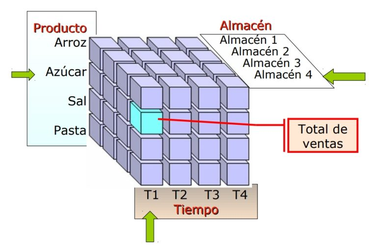
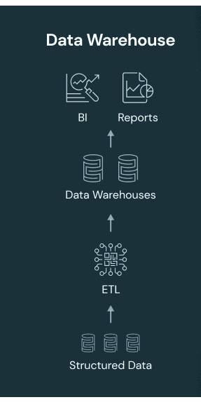
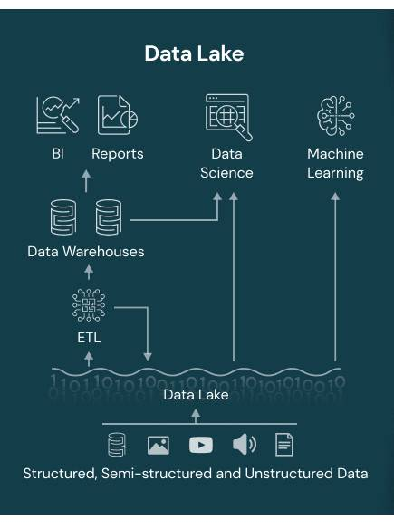
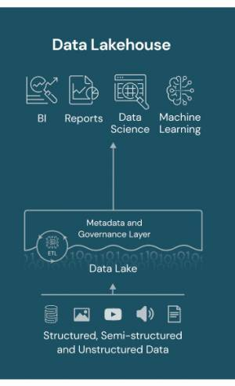

5. Almacenamiento
5.1 Tipos de Archivos en Big Data
5.1.1. Clasificacción de los archivos en función del tipo de datos
| Tipo de Datos | Descripcion | Formatos comunes | Ejemplos | Observaciones |
|---|---|---|---|---|
| Archivos de Datos Estructurados | Datos organizados en un formato con una estructura fija y predefinida, como las tablas de una base de datos relacional. | CSV | Archivos de hojas de cálculo, bases de datos SQL y archivos CSV. | Los archivos estructurados son eficientes para almacenar datos tabulares, pero pueden ser menos flexibles para datos variados o no estructurados. |
| Archivos de Datos Semiestructurados | No siguen una estructura fija como los datos estructurados, pero tienen cierta organización o jerarquía, como en el caso de archivos JSON o XML. | JSON y XML | Archivos JSON que almacenan configuraciones, datos de sensores o información de productos. | Los datos semiestructurados son ideales para representar información jerárquica, como configuraciones de aplicaciones o datos de sensores. |
| Archivos de Datos No Estructurados | Carecen de una organización o formato definido y pueden incluir archivos de imágenes, videos, documentos de texto sin formato y audio, entre otros. | Imágenes JPEG, videos MP4, documentos de texto sin formato, grabaciones de audio, etc. | Se utilizan herramientas de procesamiento de medios, visión por computadora, reconocimiento de voz y análisis de texto para extraer información de datos no estructurados. | |
| Archivos de Log | Registran eventos y actividades, como transacciones, errores o interacciones de usuarios. | Herramientas como Splunk, ELK Stack (Elasticsearch, Logstash, Kibana) y Apache Flume se utilizan para analizar y visualizar datos de registros. |
5.1.2. Formatos de Archivos Más Comunes en Big Data
| Formato | Descripcion | Usos más comunes |
|---|---|---|
| Avro | Avro es un formato de datos que se utiliza para la serialización de datos y es compatible con múltiples lenguajes de programación. Es eficiente, compacto, esquemático y permite la evolución de esquemas de datos. | Avro se utiliza en sistemas de registro y en la comunicación entre componentes de Big Data. |
| Parquet | Parquet es un formato de columna abierto que se utiliza para el almacenamiento eficiente de datos estructurados y semiestructurados. Ofrece compresión eficiente y procesamiento de columnas, lo que lo hace adecuado para análisis de Big Data. | Parquet se utiliza en aplicaciones de análisis de datos, como Apache Hive y Apache Impala. |
| ORC | ORC (Optimized Row Columnar) es un formato de archivo de columna optimizado para la eficiencia en el almacenamiento y procesamiento de datos. Se compara favorablemente con Parquet y Avro en términos de eficiencia y velocidad de consulta. | ORC se utiliza en sistemas como Apache Hive y proporciona un rendimiento eficiente en consultas analíticas. |
| Sequence | Los archivos Sequence almacenan datos en un formato de secuencia binaria y son adecuados para la entrada y salida de datos de alto rendimiento. | Se utilizan para almacenar registros y datos de flujo. |
5.1.3. Almacenamiento de Datos en Columnas vs Filas
El almacenamiento de datos en columnas y en filas son dos enfoques diferentes para organizar y almacenar datos en bases de datos.
| Almacenamieto | En Filas | En Columnas |
|---|---|---|
| Descripcion | Cada fila representa una entidad o un registro completo. | En operaciones de lectura/escritura de registros completos. |
| Eficiente | ara operaciones de actualización frecuente de registros individuales. | Para operaciones de agregación y análisis de datos, como consultas OLAP y análisis de datos grandes. |
| No Eficiente | Para operaciones de agregación y análisis de datos que implican múltiples columnas | Para operaciones de actualización frecuente de registros individuales. |
| Adecuado | Para bases de datos transaccionales y aplicaciones que requieren actualizaciones frecuentes. | Para bases de datos analíticas y almacenes de datos (Data Warehouses). |
| Ejemplo | BD Relacionales tradicionales. | BD Analíticas columnares, como Apache Cassandra o Apache HBase. |
Comparativa con un ejemplo.
Si tenemos la siguiente tabla:
| Name | City | Age |
|---|---|---|
| Matt | LosAngeles | 27 |
| Dave | SanFrancisco | 30 |
| Tin | Oakland | 33 |
En un almacenamiento por Filas los datos se guardan asi:
| Matt | LosAngeles | 27 | Dave | SanFrancisco | 30 | Tin | Oakland | 33 |
En una almacenamiento por Columnas sería así:
| Matt | Dave | Tin | Oakland | Los Angeles | San Francisco | 27 | 30 | 33 |
5.2 Repositorios
Un repositorio de Big Data es un sistema de almacenamiento centralizado y gestionado diseñado para almacenar, administrar y organizar grandes volúmenes de datos. Estos repositorios se utilizan para reunir y conservar una amplia variedad de datos, incluidos datos estructurados, semiestructurados y no estructurados, con el objetivo de facilitar su posterior análisis y procesamiento.
Características:
-
Escalabilidad: Un repositorio de Big Data debe ser altamente escalable, lo que significa que puede manejar grandes volúmenes de datos a medida que la organización crece sin comprometer el rendimiento.
-
Diversidad de Datos: Debe admitir diversos tipos de datos, desde datos estructurados en bases de datos relacionales hasta datos no estructurados como registros de servidores web, documentos de texto, imágenes, videos y más.
-
Almacenamiento Eficiente: Utiliza técnicas de almacenamiento eficiente para aprovechar al máximo el espacio de almacenamiento y minimizar los costos.
-
Procesamiento Distribuido: Puede trabajar en conjunto con sistemas de procesamiento distribuido, como Hadoop, para permitir el análisis de datos a gran escala.
-
Metadatos y Catalogación: Proporciona capacidades de gestión de metadatos y catalogación para facilitar la búsqueda y el acceso a los datos almacenados.
-
Seguridad y Control de Acceso: Debe ofrecer mecanismos de seguridad para proteger los datos almacenados y controlar el acceso a los mismos.
-
Almacenamiento en Bruto: Los datos se almacenan en su forma original, lo que permite su conservación sin procesar para análisis posteriores.
-
Integración con Herramientas de Análisis: Debe ser compatible con una variedad de herramientas y tecnologías de análisis de datos para permitir el procesamiento y análisis de datos de manera eficiente.
-
Tolerancia a Fallos: Debe estar diseñado para ser tolerante a fallos y garantizar la disponibilidad y confiabilidad de los datos.
Herramientas:
- Apache HDFS (Hadoop Distributed File System):
-
Descripción: HDFS es el sistema de archivos distribuido de Hadoop y se utiliza para almacenar grandes conjuntos de datos de manera distribuida. Es fundamental en el ecosistema Hadoop.
-
Apache Cassandra:
-
Descripción: Cassandra es una base de datos distribuida altamente escalable y sin un solo punto de fallo. Es especialmente buena para escribir y leer grandes cantidades de datos en un entorno distribuido.
-
Amazon S3 (Simple Storage Service):
-
Descripción: No es una herramienta de código abierto, pero es una opción popular en la nube para el almacenamiento de datos a gran escala. Amazon S3 es un servicio de almacenamiento de objetos que puede gestionar grandes cantidades de datos.
-
Azure Data Lake Storage:
-
Descripción: Azure Data Lake Storage es un servicio de almacenamiento escalable y seguro para big data. Permite almacenar y analizar grandes cantidades de datos de manera eficiente. Puedes usarlo en conjunto con otras herramientas y servicios de Azure.
-
Azure Databricks:
-
Descripción: Azure Databricks es una plataforma de análisis de big data basada en Apache Spark. Ofrece un entorno colaborativo para científicos de datos, ingenieros y analistas para procesar y analizar grandes conjuntos de datos.
-
Azure Blob Storage:
- Descripción: Aunque no es específico de big data, Azure Blob Storage es un servicio de almacenamiento de objetos en la nube que puede utilizarse para almacenar grandes cantidades de datos, y es comúnmente utilizado en entornos de big data.
5.3 Cubos OLAP
OLAP es una tecnología que permite a los usuarios realizar análisis multidimensionales de datos. Proporciona una vista rápida y flexible de los datos a través de un modelo multidimensional.
5.3.1. Fundamentos de Cubos OLAP
Los cubos OLAP representan datos en múltiples dimensiones, lo que permite una vista rica y flexible de los datos. Las dimensiones pueden ser atributos como tiempo, producto o ubicación.

Los modelos de datos en los cubos OLAP son Estrella y Copo de Nieve. En el modelo de estrella, los datos se organizan en una tabla de hechos central con dimensiones relacionadas. En el modelo de copo de nieve, las dimensiones se normalizan en varias tablas, lo que reduce la redundancia de datos.
Los cubos OLAP ofrecen un rendimiento superior para consultas analíticas, son ideales para datos multidimensionales y facilitan el análisis interactivo de datos.
5.3.2. Tipos de Cubos OLAP
- Cubos MOLAP (Multidimensional OLAP): Almacenan datos preagregados en una estructura multidimensional optimizada para consultas. Ejemplo: Microsoft Analysis Services:
- Cubos ROLAP (Relational OLAP): Utilizan bases de datos relacionales subyacentes para almacenar datos multidimensionales. Ejemplos: SAP BW (SAP Business Warehouse) y Oracle OLAP.
- Cubos HOLAP (Hybrid OLAP): Combinan características de MOLAP y ROLAP para equilibrar el rendimiento y la flexibilidad. Ejemplo: Microsoft SQL Server Analysis Services (HOLAP)
5.3.3. Dimensiones y Medidas
Las dimensiones son atributos por los cuales se puede analizar un conjunto de datos, mientras que las medidas representan los valores numéricos a analizar, como ventas, ingresos, cantidad de productos, etc.
Ejemplos de Dimensiones: Tiempo (día, mes, año), producto (categoría, marca), ubicación (ciudad, país) y más.
Ejemplos de Medidas: Ventas, ingresos, cantidad de productos vendidos, entre otros.
5.3.4. Herramientas OLAP
Ejemplos de Herramientas y Sistemas OLAP Populares:
- Mondrian
- Microsoft Analysis Services
- IBM Cognos
Estas herramientas proporcionan interfaces de usuario para crear y explorar cubos OLAP.
5.3.5. Integración con Big Data
Los cubos OLAP son esenciales para analizar grandes volúmenes de datos, ya que permiten un acceso eficiente a datos multidimensionales. Pero se requiere la preparación y transformación de datos a partir de fuentes de datos antes de cargarlos en cubos OLAP.
5.4 Data Warehouse
5.4.1. Definición
Un Data Warehouse es un sistema de almacenamiento de datos diseñado para consolidar, limpiar y estructurar datos empresariales de diversas fuentes con el fin de facilitar el análisis y la generación de informes.
Los Data Warehouses desempeñan un papel fundamental en la consolidación de datos de múltiples fuentes en un único repositorio centralizado, lo que facilita el acceso y la toma de decisiones basadas en datos.

5.4.2. Características Clave
- Estructura de Datos: Los datos se almacenan de manera organizada en tablas relacionales que permiten la consulta y análisis eficiente.
- Procesamiento de Datos: Los datos se someten a procesos de extracción, transformación y carga (ETL) para limpiar, transformar y estructurar los datos para su análisis.
- Orientado a la Toma de Decisiones: Los Data Warehouses están diseñados para admitir consultas, análisis y generación de informes que respalden la toma de decisiones empresariales.
5.4.3. Componentes de un Data Warehouse
-
Datos de Origen (Data Sources):
- Representan las diversas fuentes de datos de la empresa. Pueden incluir bases de datos operativas, archivos planos, datos de redes sociales, registros de transacciones, entre otros.
-
Proceso de Extracción, Transformación y Carga (ETL):
- Este proceso es crucial para la integración de datos. Incluye:
- Extracción (Extract): Obtención de datos desde las fuentes de origen.
- Transformación (Transform): Limpieza, normalización y transformación de datos para que sean coherentes y útiles.
- Carga (Load): Almacenamiento de datos transformados en el data warehouse.
- Este proceso es crucial para la integración de datos. Incluye:
-
Almacén de Datos (Data Warehouse):
- Es el repositorio central donde se almacenan los datos consolidados y transformados. El almacén de datos suele tener una estructura específica para facilitar el análisis, como un esquema dimensional o esquema en estrella.
-
Esquema Dimensional:
- Es una estructura organizativa de datos que permite un acceso rápido y eficiente a los datos en el data warehouse. Incluye dimensiones (aspectos de interés, como tiempo, producto, ubicación) y hechos (números cuantificables, como ingresos, unidades vendidas).
-
Herramientas de Consulta y Reporting:
- Permiten a los usuarios ejecutar consultas y generar informes basados en los datos almacenados en el data warehouse. Ejemplos incluyen SQL para consultas directas y herramientas de reporting como Tableau, Power BI, etc.
-
Herramientas de Visualización:
- Ayudan a presentar los datos de manera comprensible a través de gráficos, tablas, dashboards, etc. Estas herramientas permiten a los usuarios analizar los datos de manera más efectiva.
-
Metadatos:
- Información sobre los datos almacenados en el data warehouse, como definiciones de tablas, descripciones de campos y detalles sobre la transformación de datos. Los metadatos son esenciales para comprender y gestionar eficazmente la información almacenada.
-
Seguridad y Control de Acceso:
- Mecanismos para garantizar que solo las personas autorizadas tengan acceso a ciertos datos. Esto incluye controles de acceso, cifrado y auditoría.
-
Backup y Recuperación:
- Procesos y políticas para realizar copias de seguridad regulares de los datos almacenados en el data warehouse y procedimientos para recuperar datos en caso de pérdida.
-
Gestión de Rendimiento:
- Estrategias y herramientas para optimizar el rendimiento del data warehouse, como la indexación adecuada, el particionamiento de tablas y la optimización de consultas.
5.4.4. Herramientas:
- Amazon Redshift: Data Warehouse de alto rendimiento en la nube de AWS.
- Google BigQuery: Data Warehouse completamente administrado en la nube de GCP.
- Snowflake: Plataforma de Data Warehouse en la nube.
- Microsoft Azure Synapse Analytics (anteriormente Azure SQL Data Warehouse): Data Warehouse de Azure.
- Oracle Exadata: Solución de Data Warehouse de Oracle.
5.5 Data Lake
5.5.1. Definición
Un Data Lake es un sistema de almacenamiento de datos que permite la ingesta y almacenamiento de datos en su forma bruta y sin procesar, sin la necesidad de una estructura de datos fija. Puede contener datos de diversas fuentes y formatos.
El Data Lake desempeña un papel fundamental al permitir la ingestión y el almacenamiento de datos en bruto desde diversas fuentes, lo que facilita el acceso y el análisis de datos en su forma original.

5.5.2. Características Clave
- Almacenamiento en Bruto: Los datos se almacenan en su forma original, sin procesar ni estructurar previamente.
- Escalabilidad: Los Data Lakes son altamente escalables y pueden manejar grandes volúmenes de datos, lo que los hace adecuados para Big Data.
- Variedad de Datos: Pueden contener datos estructurados, semiestructurados y no estructurados, lo que les brinda flexibilidad en la gestión de datos diversos.
- Flexibilidad: No se requiere una estructura de datos fija, lo que permite experimentar con diferentes tipos de datos y esquemas.
5.5.3. Componentes de un Data Lake
Almacenamiento de Datos Los datos se almacenan generalmente en sistemas de archivos distribuidos como Hadoop HDFS o en servicios en la nube, lo que proporciona una capacidad de almacenamiento escalable.
Ingesta de Datos Los datos se pueden ingresar mediante carga por lotes, transmisión en tiempo real y la ingestión de datos en bruto, lo que permite la adquisición continua de datos.
5.5.4. Datos en un Data Lake
En un Data Lake tenemos todos los tipos de datos posibles:
- Datos Estructurados: Esto incluye archivos CSV o JSON que se almacenan sin procesar y conservan su estructura original.
- Datos Semiestructurados: Ejemplos son documentos XML o JSON que pueden no cumplir con una estructura rígida.
- Datos No Estructurados: Esto abarca datos como imágenes, audio o texto sin formato que no siguen una estructura específica.
5.6 Data LakeHouse
5.6.1 Definición
Un Data Lakehouse es un sistema de gestión de datos que combina las ventajas de los Data Warehouses y los Data Lakes. Al igual que un Data Lake, almacena datos en su forma bruta, pero aporta capacidades de procesamiento integrado y consultas eficientes, lo que permite un análisis más rápido. Combina la escalabilidad de un Data Lake con el rendimiento mejorado de un Data Warehouse.
El Data Lakehouse introduce capacidades transaccionales, permitiendo operaciones de escritura más controladas, lo que facilita el mantenimiento de la integridad y consistencia de los datos.

5.6.2 Características Clave
- Almacenamiento en Bruto: Al igual que en un Data Lake, los datos se almacenan en su forma original y sin procesar.
- Procesamiento Integrado: Ofrece capacidades de procesamiento integrado para consultas y análisis más eficientes.
- Escalabilidad: Mantiene la escalabilidad de un Data Lake, lo que permite manejar grandes volúmenes de datos.
- Rendimiento Mejorado: Combina el rendimiento de un Data Warehouse con la flexibilidad de un Data Lake.
5.6.3 Componentes de un Data Lakehouse
- Almacenamiento de Datos: Los datos se almacenan generalmente utilizando sistemas de archivos distribuidos o servicios en la nube, manteniendo la capacidad de escalabilidad.
- Procesamiento de Datos: Permite consultas analíticas y generación de informes de manera eficiente.
5.6.4 Modelo de Datos
Almacenamiento en Bruto: Al igual que en un Data Lake los datos se almacenan en su forma original sin procesar, lo que permite la conservación de datos en bruto para futuros análisis.
Modelo de Datos Estructurados: Estructuración de Datos cuando sea Necesario. Aunque los datos se almacenan en bruto, es posible aplicar esquemas de datos para estructurarlos según las necesidades.
5.6.5 Consultas y Análisis
- Los usuarios pueden realizar consultas SQL y utilizar tecnología OLAP para el análisis de datos multidimensionales. Además, se facilita la generación de informes y el análisis para la toma de decisiones empresariales.
5.6.6 Herramientas:
- Delta Lake: Biblioteca de código abierto que agrega confiabilidad transaccional a los Data Lakes.
- Apache Iceberg: Otra biblioteca de código abierto para tablas de datos en Data Lakes.
- Databricks Delta: Solución de Data Lakehouse ofrecida por Databricks, que es una plataforma de análisis de datos basada en Apache Spark.
- Apache Hive: Un sistema de almacenamiento y procesamiento de datos de código abierto basado en Hadoop que se puede usar tanto en Data Lakes como en Data Warehouses.
- Google Cloud Bigtable: Base de datos distribuida NoSQL de alto rendimiento de GCP, que se puede utilizar como parte de una arquitectura de Data Lakehouse.akehouse2.
5.7. Comparación
| Data Warehouse | Data Lake | Data Lakehouse | |
|---|---|---|---|
| Arquitectura | Enfocada en el procesamiento de datos estructurados. | Almacenamiento de datos en bruto sin procesar. | Combina almacenamiento en bruto y procesamiento en un solo sistema. |
| Datos | Limpios, procesados y estructurados. | En bruto, no procesados y pueden ser estructurados, semiestructurados o no estructurados. | Estructurados y sin procesar, pero con la capacidad de procesamiento. |
| Escalabilidad | Suele ser más limitada en comparación con Data Lakes y Lakehouses. | Altamente escalable, puede manejar grandes volúmenes de datos. | Combina la escalabilidad de Data Lakes con capacidades de procesamiento. |
| Rendimiento | Rápido para consultas analíticas complejas en datos estructurados. | Más lento para consultas debido a la necesidad de procesamiento. | Ofrece un equilibrio entre rendimiento y capacidad de procesamiento. |
| Uso y Aplicaciones | Análisis de datos estructurados y métricas empresariales. | Almacenamiento y procesamiento de datos brutos, experimentación de datos. | Análisis de datos estructurados y no estructurados, aplicaciones híbridas. |
5.8. Gobernanza de datos
La gobernanza de datos se refiere al conjunto de procesos, políticas, estándares y procedimientos que garantizan la calidad, integridad, seguridad, privacidad y cumplimiento normativo de los datos en una organización.Es esencial para garantizar que los datos sean confiables, precisos y seguros. Además, es fundamental para cumplir con regulaciones de privacidad y normativas específicas de la industria.
Los datos son activos críticos para las organizaciones y son la base de la toma de decisiones. La gestión adecuada de los datos es esencial para el éxito empresarial.
Una sólida gobernanza de datos conlleva beneficios como datos confiables, toma de decisiones informada y cumplimiento normativo, lo que mejora la eficiencia y la competitividad de la organización.
5.8.1. Componentes Clave de la Gobernanza de Datos
Políticas y Procedimientos
- Establecer políticas que rigen la gestión, calidad, privacidad y seguridad de los datos en la organización.
- Definir procesos y estándares que aseguren el cumplimiento de las políticas.
- Supervisar y hacer cumplir las políticas de datos para garantizar la conformidad.
Metadatos
- Los metadatos describen los datos, su origen, estructura y significado, lo que facilita la gestión y el rastreo de los datos.
- Los metadatos son esenciales para catalogar, buscar y entender los datos.
- Los diccionarios de datos y los catálogos de metadatos ayudan a organizar y acceder a información sobre los datos.
Data Owners y Data Stewards
Son los propietarios de los datos que establecen la dirección estratégica y la toma de decisiones en torno a los datos.
Los data Stewards son los responsables de los datos y se centran en la implementación opertiva y en garantiza que los datos cumplan los estándares y políticas establecidas.
Calidad de Datos
- Evaluar la calidad de los datos y tomar medidas para mejorarla.
- Técnicas para Identificar y Resolver Problemas de Calidad de Datos: Utilizar técnicas como la validación, limpieza y estandarización de datos.
- Monitorización continua para garantizar la calidad de los datos.
Seguridad y Privacidad de Datos
- Implementar medidas de seguridad para proteger datos confidenciales y sensibles.
- Cumplir con regulaciones como el RGPD (Reglamento General de Protección de Datos) para garantizar la privacidad de los datos.
- Establecer controles de acceso y permisos para garantizar que solo las personas autorizadas puedan acceder a los datos.
Cumplimiento Normativo
- Asegurarse de que los datos cumplan con regulaciones específicas de la industria en la que opera la organización.
- Mantener registros y documentación que demuestren el cumplimiento de las regulaciones.
- Comprender las sanciones por incumplimiento y riesgos asociados.
5.9. Actividades
5.9.1. Actividad 1
La empresa ABC Retail tiene indetificados los siguiente requisitos:
- Necesidad de analizar las ventas por región, producto y período de tiempo.
- Seguimiento del rendimiento de los empleados de ventas.
- Análisis de inventario y gestión de existencias.
- Identificación de tendencias de compras de clientes.
Se pide:
-
Diseño del Esquema Dimensional:
- Diseña un esquema dimensional que refleje la estructura de datos necesaria para satisfacer los requisitos identificados. Debe incluir dimensiones y hechos relevantes para la empresa imaginaria.
-
Selección de Herramientas y Tecnologías:
- Investigación y selección de las herramientas y tecnologías que utilizarán para implementar el data warehouse. Puedes considerar opciones como bases de datos analíticas, herramientas de ETL (Extract, Transform, Load), y herramientas de visualización.
-
Creación de un Modelo Lógico y Físico:
- Crea un modelo lógico y físico del data warehouse. El modelo lógico puede representar las relaciones entre las tablas, mientras que el modelo físico debe considerar aspectos de rendimiento y optimización.
-
Desarrollo de Proceso ETL:
- Implementa un proceso ETL para cargar datos desde las fuentes de origen hasta el data warehouse. Esto incluye la extracción de datos, su transformación según las necesidades y la carga en el data warehouse.
-
Creación de Reportes y Dashboards:
- Crea al menos dos reportes y un dashboard utilizando herramientas de visualización. Estos deben demostrar cómo se pueden responder las preguntas analíticas identificadas en los requisitos.
5.9.2. Actividad 2
Dado el siguiente caso de estudio:
Un hospital está buscando implementar un sistema de gestión de datos más eficiente para abordar los desafíos de la diversidad de datos médicos, como registros de pacientes, resultados de pruebas, imágenes médicas, informes de laboratorio, etc. El objetivo es mejorar la accesibilidad, la seguridad y la capacidad de análisis de estos datos para mejorar la atención al paciente, la investigación médica y la eficiencia operativa.
- Analízalo e identifica los desafíos que podrían enfrentar y discute cómo un Data Lake podría abordar esos desafíos.
- Recopila información sobre la arquitectura típica de un Data Lake.
- Diseña la arquitectura de un Data Lake para esa empresa, identificando componentes clave, herramientas utilizadas y cómo abordarían los desafíos específicos del escenario.
- Presenta tu diseño conceptual al resto de la clase.